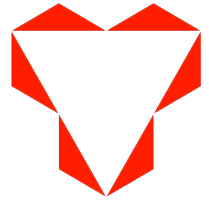

<!--
@license
Copyright (c) 2016 The Polymer Project Authors. All rights reserved.

-->
<link rel="import" href="../bower_components/polymer/polymer.html">
<link rel="import" href="../bower_components/app-route/app-location.html">
<link rel="import" href="../bower_components/app-route/app-route.html">
<link rel="import" href="../bower_components/app-layout/app-drawer-layout/app-drawer-layout.html">
<link rel="import" href="../bower_components/app-layout/app-drawer/app-drawer.html">
<link rel="import" href="../bower_components/app-layout/app-scroll-effects/app-scroll-effects.html">
<link rel="import" href="../bower_components/app-layout/app-header/app-header.html">
<link rel="import" href="../bower_components/app-layout/app-header-layout/app-header-layout.html">
<link rel="import" href="../bower_components/app-layout/app-toolbar/app-toolbar.html">
<link rel="import" href="../bower_components/paper-icon-button/paper-icon-button.html">
<!--<link rel="import" href="../bower_components/paper-header-panel/paper-header-panel.html">-->
<link rel="import" href="../bower_components/iron-pages/iron-pages.html">
<link rel="import" href="../bower_components/iron-selector/iron-selector.html">
<link rel="import" href="my-icons.html">
<link rel="import" href="../bower_components/iron-icon/iron-icon.html">
<link rel="import" href="../bower_components/paper-material/paper-material.html">
<link rel="import" href="../bower_components/iron-icon/iron-icon.html">
<link rel="import" href="../bower_components/iron-icons/iron-icons.html">
<dom-module id="my-app">
  <template>

    <style>
      :host {
        display: block;
        --app-primary-color: #4285f4;
        --app-secondary-color: black;
      }

      app-header {
        background-color: var(--app-primary-color);
        color: #fff;
		position: fixed;
		top: 0;
        left: 0;
        right: 0;
        z-index: 1;
		
      }
      app-header paper-icon-button {
        --paper-icon-button-ink-color: white;
      }

      .drawer-list {
        margin: 0 20px;
      }
      .drawer-list a {
        display: block;
        padding: 0 16px;
        line-height: 40px;
        text-decoration: none;
        color: var(--app-secondary-color);
      }
      .drawer-list a.iron-selected {
        color: black;
        font-weight: bold;
      }
      .drawer-list a.subroute {
         padding-left: 32px;
      }
      app-toolbar.main-toolbar {
         position: fixed;
		 top: 0;
		 left: 0;
		 right: 0;
		 background: #000;
		 box-shadow: 0 2px 5px 0 rgba(0, 0, 0, 0.3);
		 color: white;
		 z-index: 1;
		 font-weight: bold;		
      }
	  app-toolbar.left-toolbar {
        background-color: #000;
        color: #fff;
		height:60px;
      }		  
       app-drawer{
	     z-index: 2; 
		 --app-drawer-width	:180px ;       
	    }		  
	   @media (max-width: 380px) {
		 app-drawer{
	     z-index: 2;
         --app-drawer-width	:310px ;
	    }	
	   } 
	   iron-pages {
	     margin-top: 5px;
	   }
	   .selector-sign{
	    @apply(--layout-horizontal);
		height:70px;
		width:100%;
		border-bottom:1px solid #ccc;		
	   }
	   .selector{
	    @apply(--layout-horizontal);
		height:50px;
		width:100%;
        margin-top:10px;		
	   }
	   iron-icon{
	    width: 30px;
        height: 30px;
		padding-right:20px;
		color:#616161;
	   }	 
	   a{
	     width:100%;
         font-size:16px !important;
         font-weight:bold;		 
		 color:#616161 !important;
	   }
	  .leftTop{
	     height:130px;
	     background:#000; 
         padding-top:90px;        		 
	   }
	   .log_img{
	     width:30%;
		 height:60%;
	   }
    </style>

    <app-location route="{{route}}"></app-location>
    
	<app-route
       route="{{route}}"
       pattern="/:page"
       data="{{routeData}}"
       tail="{{subroute}}">
	</app-route>
    
	<app-header fixed effects="waterfall">
	  <app-toolbar  class="main-toolbar">
         <paper-icon-button icon="menu" drawer-toggle></paper-icon-button>
         <div title>SCORTES</div>
		 <paper-icon-button icon="search"></paper-icon-button>
	 	 <paper-icon-button icon="perm-identity"></paper-icon-button>
	 	 <paper-icon-button icon="more-vert"></paper-icon-button>
      </app-toolbar>
	</app-header>
	
	<iron-pages  selected="1" >
       <my-view1 name="view1"></my-view1>
       <my-view2 name="view2"></my-view2>
       <my-view3 name="view3"></my-view3>
     </iron-pages>
	 
      <app-drawer swipe-open>
        <div class="leftTop"  align="center" >
		  
		</div>	
        <iron-selector   class="drawer-list" role="navigation">
          <div class="selector-sign"><a name="view1" href="#"><iron-icon icon="perm-identity"></iron-icon> Sign In</a></div>
		  <div class="selector"><a  href="#"><iron-icon icon="settings" ></iron-icon>Settings</a></div>
		  <div class="selector"><a  href="#"><iron-icon icon="feedback" ></iron-icon>Feedback</a></div>
		  <div class="selector"><a  href="#"><iron-icon icon="error" ></iron-icon>Support</a></div>
		</iron-selector>	
      </app-drawer>	  
  </template>

  <script>  	
    Polymer({
      is: 'my-app',	  
      properties: {
        page: {
          type: String,
          reflectToAttribute: true,
          observer: '_pageChanged'
        },
      },
      observers: [
        '_routePageChanged(routeData.page)'
      ],

      _routePageChanged: function(page) {
        this.page = page || 'view2';
      },

      _pageChanged: function(page) {		
        this.importHref(
          this.resolveUrl('my-' + page + '.html'), null, null, true);
      },
	  ready: function() {	  
	      var drawer = this.shadowRoot.querySelector('app-drawer');
		  this.shadowRoot.querySelector('paper-icon-button').addEventListener('tap', function() {
		  drawer.toggle();			
		});		  
	  }      
    });
   
  </script>

</dom-module>
